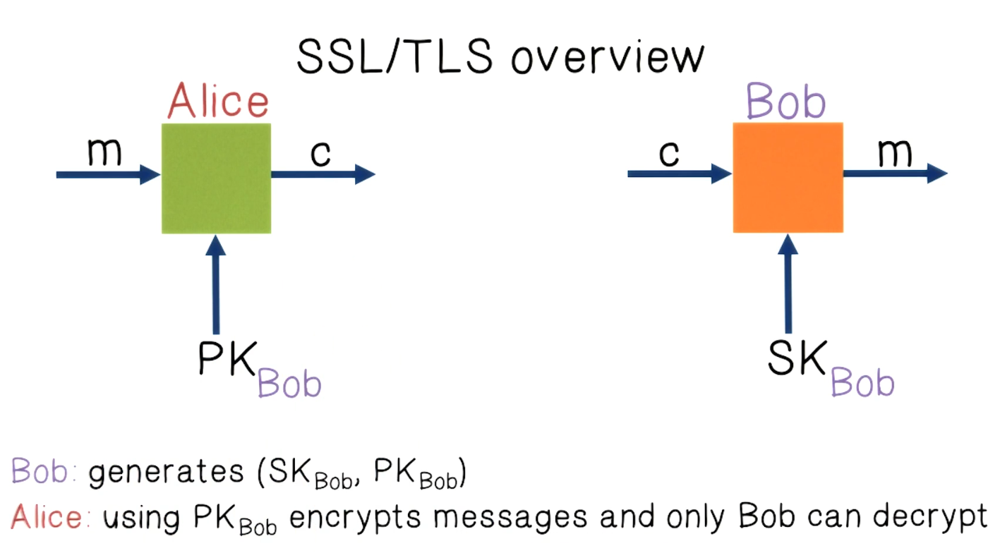
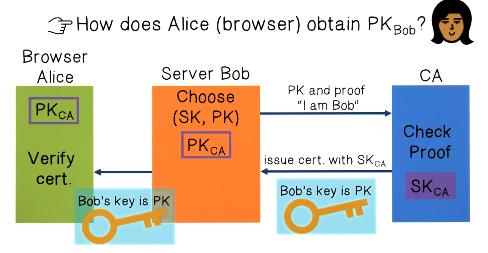
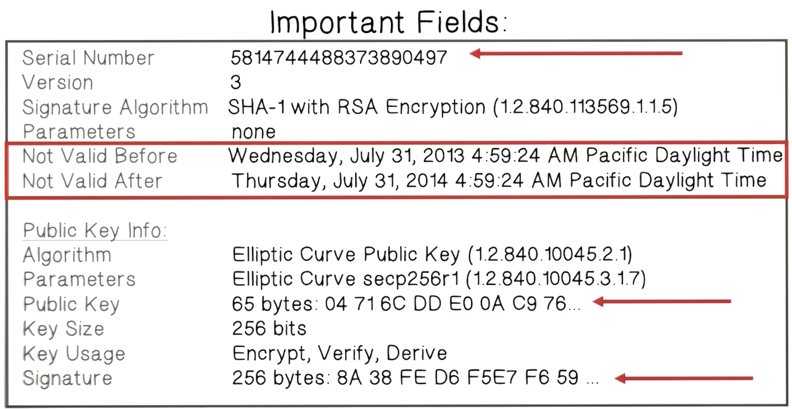
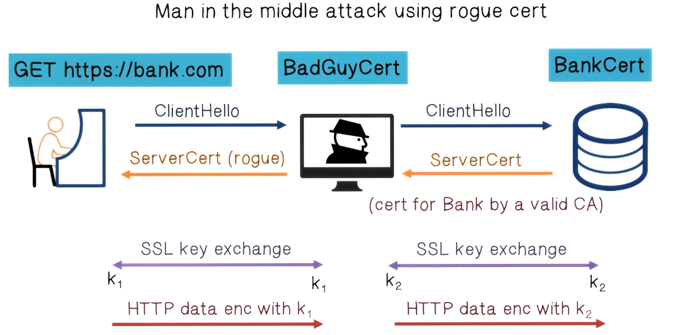

NetSec Lecture Notes - Lesson 7 - HTTPS
HTTPS
- HTTPS: Hyper Text Protocol Secure = all communication between your browser and a website is encrypted
- Basically HTTP over SSL (Secure Socket Layer)
- SSL now called TLS (Transport Layer Security)
- As opposed to HTTP, which is a clear text protocol
- Creates a secure channel over an insecure network
- Is reasonable protection against man in them iddle attacks
- Can still provide security even when only one side of the communication is secure
Why is HTTPS not used for all web traffic?
- Crypto slows down web servers (but not by much if done right)
- Some ad networks do not support HTTPS
- Reduced ad revenue for publishers
- Stats given are from 2015, probably way out of date
HTTPS Quiz
- Select all of the items that can be encrypted by HTTPS
- Request URL
- True
- Query parameters
- True
- Headers
- True
- Cookies
- True
- Host addresses
- Port numbers
- The amount of transferred data
- Length of the session
- Request URL
HTTPS Threat Model: Network Attacker
- Controls network infrastructure: Routers, DNS
- Eavesdrops, injects, blocks, and modifies packets
- Examples:
- Wireless network at internet cafe
- Internet access at hotels (untrusted ISP)
SSL/TLS Overview
- Uses public key crypto

Certificate Authority
- Key challenge is how does Alice obtain Bob’s public key?
- Standard is to use certificates issued by an authority
 
Certificates on the Web
* Subject's commonName can be:
* An explicit name, e.g. cc.gatech.edu
* A wildcard cert, e.g. \*.gatech.edu
* Matching Rule:
* \* must occur in leftmost component, does not match "."
* For example: "\*.a.com" matches "x.a.com" but not "y.x.a.com" * Browsers accept certificates from a large number of CAs
* Top level CAs ~ 60
* Intermediate CAs ~ 1200 * Browser handshake 
HTTPS In the Browser: The Lock Icon
- Intended Goal:
- Provide the user with identity of page origin
- Indicate to user that page contents were not viewed or modified by a network attacker
- Indicates that all elements on the page were fetched using HTTPS
- For all elements:
- HTTPS cert issued bya CA trusted by the browser
- HTTPS cert is valid (not expired)
- Domain in URL matches:
- CommonName or SubjectAlternativeName in cert
HTTPS Disadvantages Quiz
- Which of the following are real disadvantages to using HTTPS
- Browser caching won’t work properly
- You need to buy an SSL certificate
- True
- Outdated, thanks LetsEncrypt
- Mixed modes issue - loading insecure content on a secure site
- True
- HTTPS uses a lot of serverr esources
- Proxy caching problems - public caching cannot occur
- True
- HTTTPS introduces latencies
Problems with HTTPS and the Lock Icon
- Upgrade from HTTPS to HTTPS
- SSL stripping attack prevents browser from upgrading, but won’t display any certificate errors
- aka HTTP downgrading attack
- Solution is to use HSTS (Strict Transport Security)
- Policy set for max of 1 year, on server
- Header tells browser to always connect over HTTPS
- Subsequent visits must be over HTTPS (self signed certs result in an error)
- Browser refuses to connect over HTTP or if self-signed cert, requires that entire site be served over HTTPS
- HSTS flag deleted when users “clears private data”: a tradeoff between security and privacy
- SSL stripping attack prevents browser from upgrading, but won’t display any certificate errors
- Forged certificates
- Wrong issuance
- DigiNotar example
- Many other examples
- Breaks the whole cert trust model
- Functions like a man in the middle attack
- 
Solutions to Certificate Issues
- Dynamic HTTP public-key pinning
- Let a site declare CAs that can sign its sert (similar to HSTS)
- On subsequent HTTPS visits, browser rejects certs issued by other CAs
- TOFU: Trust On First Use
- There’s an HPKP extension (HTTP header from server) to facilitate this
- Certificate Transparency
- Idea: CAs must advertise a public log of all certs they issued
- Browser will only use a cert if it is published on log server
- Efficient implementation using Merkle hash trees
- Companies can scan logs to look for invalid issuance